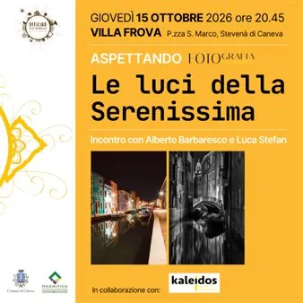

gio 15 ott · dalle 20:45
Le Luci della Serenissima
"Le Luci della Serenissima" è il terzo appuntamento della serie "Aspettando Foto in Villa". Villa Frova accoglie i fotografi Alberto Barbaresco e Luca Stefan giovedì 15 ottobre alle ore 20.45 con le loro fotografie scattate in notturna, senza luce artificiale, raccontando una…
 Indicazioni
Indicazioni
- Costi e prenotazioni
- Costo non indicato · Prenotazione non indicata
- Programma
- Programma da verificare. Apri la fonte ufficiale per orari e possibili aggiornamenti.
- In caso di maltempo
- Nessuna indicazione specifica pubblicata.
- Note
- Acquisito automaticamente dalla fonte.
L’EVENTO
Descrizione completa
Terzo appuntamento di "Aspettando Foto in Villa", una serie di tre incontri tra appassionati e fotografi professionisti alla scoperta di approcci, esperienze e sensibilità diverse. Le Luci della Serenissima.
Nel 2020, durante la pandemia, i fotografi Alberto Barbaresco e Luca Stefan hanno percorso una Venezia svuotata, lontana dai suoi itinerari abituali. Scattate in notturna, senza luce artificiale, le loro fotografie raccontano una città fatta di riflessi, nebbia e silenzi. Una Venezia intima, sospesa, quasi irreale. Per questo queste fotografie sono anche un invito a rallentare. A perdersi. A guardare Venezia senza cercare necessariamente ciò che già conosciamo. Evento a ingresso libero. In collaborazione con il Gruppo Fotografico Kaleidos.
IL PROGRAMMA
Programma e orari
Appuntamenti raccolti dalle fonti elencate. Dove manca un orario, non è ancora disponibile in questa scheda.
Programma pubblicato
- Dal 2026-10-15 al 2026-10-15
INFORMAZIONI UTILI
Prima di partire
- Controllare la fonte prima di partire.
ORGANIZZAZIONE